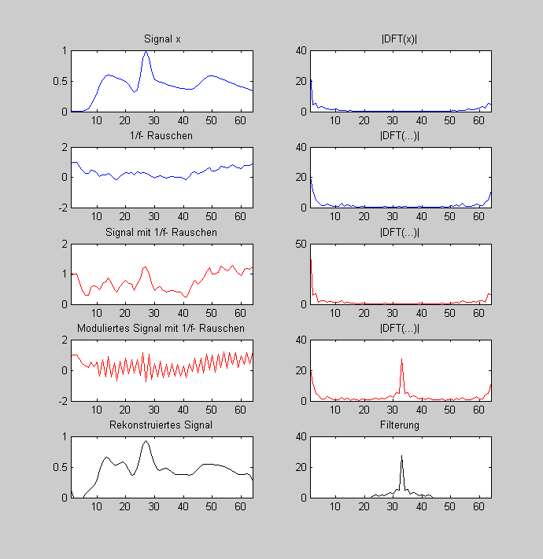

Modulationstheorem
(c) HSM B.Wir
Contents
Simulation der Störung
N = 64 %... Werte figure(1) % Signal x = ecg(N); x = filter([1 1 1],[1 -0.96],x); % etwas glätten x = x/max(x); X = fft(x); % Modulation n = 1:N; mod = (-1).^n; x_m = x.*mod; % 1/f-Rauschen r = 1.5 * randn(1,N); R = fft(r); f = 1:N/2; F_filter = [1./f, 2/N, fliplr(1./(f(2:end)))]; r_f = real(ifft(R.*F_filter)) R_f = fft(r_f); % Signal mit Rauschen y = x + r_f; Y = fft(y); y_m = x_m + r_f; Y_m = fft(y_m); figure(1); subplot(5,2,1); plot(x); title(' Signal x');xlim([1 N]); subplot(5,2,2); plot(abs(X)); title('|DFT(x)|');xlim([1 N]); subplot(5,2,3); plot(r_f); title('1/f- Rauschen');xlim([1 N]); subplot(5,2,4); plot(abs(R_f)); title('|DFT(...)|');xlim([1 N]); subplot(5,2,5); plot(y,'r'); title('Signal mit 1/f- Rauschen');xlim([1 N]); subplot(5,2,6); plot(abs(Y),'r'); title('|DFT(...)|');xlim([1 N]); subplot(5,2,7); plot(y_m,'r'); title('Moduliertes Signal mit 1/f- Rauschen');xlim([1 N]); subplot(5,2,8); plot(abs(Y_m),'r'); title('|DFT(...)|');xlim([1 N]); %% Signalrekonstruktion % Filteruung Y_m(1:22) = 0; Y_m(N-20:N) = 0; x_r = ifft(Y_m); x_r = x_r.*mod; subplot(5,2,9); plot(x_r,'k'); title('Rekonstruiertes Signal');xlim([1 N]);ylim([0 1]); subplot(5,2,10); plot(abs(Y_m),'k'); title('Filterung');xlim([1 N]);
N =
64
r_f =
Columns 1 through 7
0.9422 1.0117 1.0049 0.6817 0.4613 0.2845 0.2407
Columns 8 through 14
0.4463 0.4141 0.2376 0.0520 0.1589 0.1593 0.2832
Columns 15 through 21
0.1278 -0.0961 -0.1399 0.0672 0.2021 0.3153 0.2429
Columns 22 through 28
0.3048 0.1536 0.3403 0.2534 0.3084 0.2414 0.1686
Columns 29 through 35
0.0584 -0.0596 0.0612 0.1096 -0.0104 -0.0557 -0.0108
Columns 36 through 42
0.0332 0.0210 0.0141 0.0230 -0.0894 -0.1350 0.0593
Columns 43 through 49
0.2898 0.3880 0.2281 0.2982 0.3453 0.5038 0.6157
Columns 50 through 56
0.4218 0.4260 0.4982 0.7219 0.6694 0.6184 0.6726
Columns 57 through 63
0.8226 0.6895 0.5986 0.5459 0.7552 0.8046 0.7911
Column 64
0.8974
